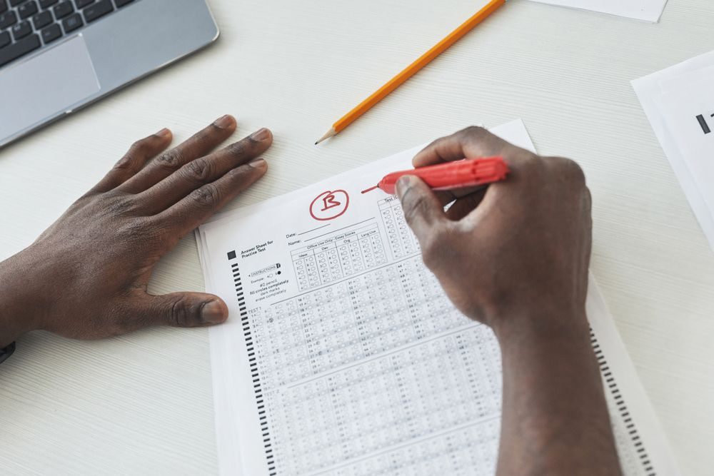

Open classes모집안내
고1 · 고2
학교별 기출로
시험 범위만 정확히
Term 2 finals기말 대비반
Opens Oct 13 · 6주
고2 · 고3
개념이 빈 한 과목만
한 달 집중
One subject, one month한 과목 단과
Opens every first Monday
예비 고1중3
고등 첫 시험 전에
국어 · 수학 두 과목
Winter pre-high예비 고1반
Opens Dec 22 · 8주
Weekly tests과목별 주간 테스트 모든 단과생
- 월국어문학 20문항
- 화수학서술형 5문항
- 수영어본문 빈칸
- 목탐구개념 OX
- 금오답클리닉
Subjects과목별 반
+고1
국어
문학 기출반화 · 목 19:00–21:00
교재 · 학교별 기출집
고2
국어
독서 · 문법반월 · 수 19:00–21:00
교재 · 자체 워크북
고2고3
국어
화법과 작문토 13:00–16:00
교재 · EBS 연계
고3
국어
수능 파이널금 19:00–22:00
교재 · 실전 모의 8회
고1
수학
공통수학 A월 · 수 17:00–19:00
교재 · 개념서 + 기출
고1
수학
공통수학 B화 · 목 17:00–19:00
교재 · 단원별 기출 300제
고2
수학
수학Ⅰ 서술형월 · 수 19:10–21:40
교재 · 서술형 60제
고3
수학
미적분 파이널화 · 목 19:10–21:40
교재 · 4점 문항 모음
설명회 +
공지사항 +
Test pack 한 주 동안 받는 자료
- 수업 날주간 테스트지과목별 20분 · 끝나고 바로 채점
- 시험 4주 전학교별 기출 분석최근 3년 · 시험 범위별로 다시 엮은 문항집
- 채점 뒤오답 노트틀린 이유를 한 줄로 적어 다음 주 확인
- 격주서술형 첨삭지빨간 펜 채점 · 감점 사유 표시
- 시험 전 주직전 보강토요일 3시간 · 학교별 반
In class 수업 장면
